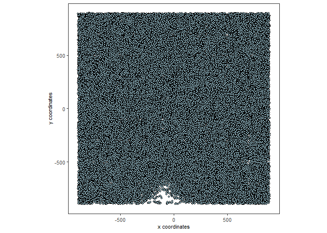
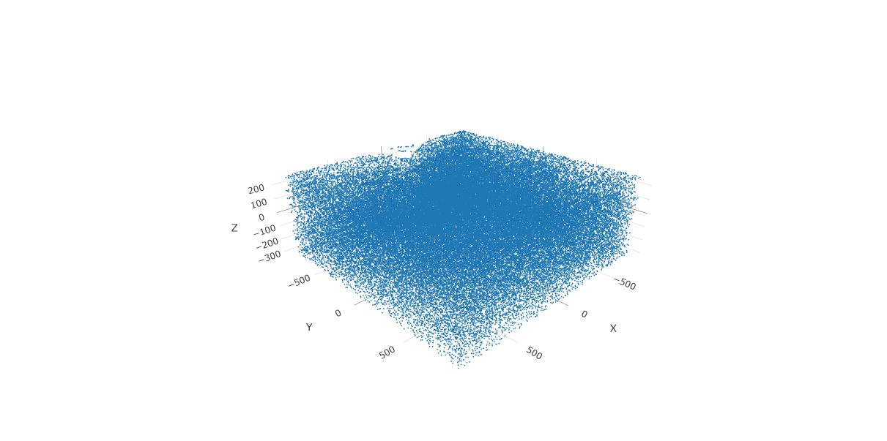
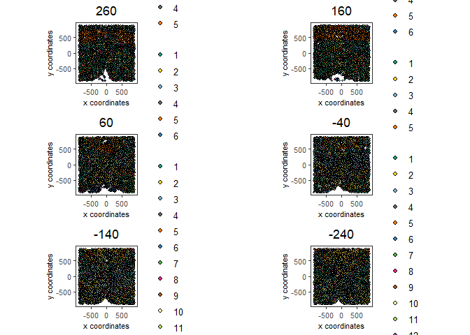
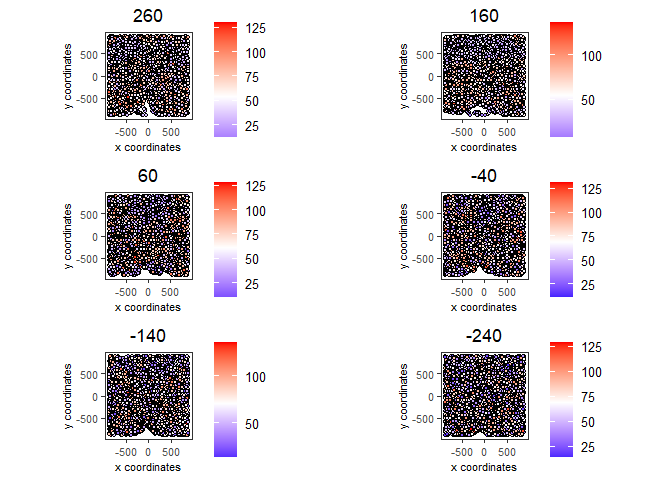

1. Dataset explanation
This tutorial walks through the visualization capabilities of Giotto. The clustering and dimension reduction methods focused on within the dimension reduction tutorial will be revisited and utilized to create heatmaps, violin plots, and visualizations that are unique to Giotto: spatial maps and networks.
This tutorial uses a merFISH dataset of mouse hypothalamic preoptic regions from Moffitt et al.. A complete walkthrough of that dataset can be found here. To download the data used to create the Giotto Object below, please ensure that wget is installed locally.
2. Start Giotto
# Ensure Giotto Suite is installed
if(!"Giotto" %in% installed.packages()) {
devtools::install_github("drieslab/Giotto@suite")
}
library(Giotto)
# Ensure Giotto Data is installed
if(!"GiottoData" %in% installed.packages()) {
devtools::install_github("drieslab/GiottoData")
}
library(GiottoData)
# Ensure the Python environment for Giotto has been installed
genv_exists = checkGiottoEnvironment()
if(!genv_exists){
# The following command need only be run once to install the Giotto environment
installGiottoEnvironment()
}3. Create a Giotto object
# Specify path from which data may be retrieved/stored
data_directory = paste0(getwd(),'/gobject_visual_data/')
# alternatively, "/path/to/where/the/data/lives/"
# Specify path to which results may be saved
results_directory = paste0(getwd(),'/gobject_visual_results/')
# alternatively, "/path/to/store/the/results/"
# Optional: Specify a path to a Python executable within a conda or miniconda
# environment. If set to NULL (default), the Python executable within the previously
# installed Giotto environment will be used.
my_python_path = NULL # alternatively, "/local/python/path/python" if desired.
# Get the dataset
getSpatialDataset(dataset = 'merfish_preoptic',
directory = data_directory,
method = 'wget')
### Giotto instructions and data preparation
# Optional: Set Giotto instructions
instrs = createGiottoInstructions(save_plot = TRUE,
show_plot = TRUE,
save_dir = results_directory,
python_path = my_python_path)
# Create file paths to feed data into Giotto object
expr_path = paste0(data_directory, "merFISH_3D_data_expression.txt.gz")
loc_path = paste0(data_directory, "merFISH_3D_data_cell_locations.txt")
meta_path = paste0(data_directory, "merFISH_3D_metadata.txt")
### Create Giotto object
testobj <- createGiottoObject(expression = expr_path,
spatial_locs = loc_path,
instructions = instrs)
# Add additional metadata
metadata = data.table::fread(meta_path)
testobj = addCellMetadata(testobj,
new_metadata = metadata$layer_ID,
vector_name = 'layer_ID')
testobj = addCellMetadata(testobj,
new_metadata = metadata$orig_cell_types,
vector_name = 'orig_cell_types')
### Process the Giotto Object
# Note that for the purposes of this tutorial, the entire dataset will be visualized.
# Thus, filter parameters are set to 0, so as to not remove any cells.
# Note that since adjustment is not required, adjust_params is set to NULL.
testobj <- processGiotto(testobj,
filter_params = list(expression_threshold = 0,
feat_det_in_min_cells = 0,
min_det_feats_per_cell = 0),
norm_params = list(norm_methods = 'standard',
scale_feats = TRUE,
scalefactor = 1000),
stat_params = list(expression_values = 'normalized'),
adjust_params = NULL)4. Visualize the Dataset
This dataset includes eight sequential slices. As such it can be visualized both in 2D and 3D.
In 2D:
spatPlot(gobject = testobj, point_size = 1.5)
In 3D:
spatPlot3D(gobject = testobj, point_size = 1, axis_scale = 'real')
5. Create and Visualize Clusters
First, run a PCA on the data. For the purposes of this tutorial, no highly variable genes will be identified or used in the reduction for simplicity. The data will simply undergo a dimension reduction through PCA. Then, run a UMAP on the data for pre-clustering visualization. The UMAP may also be plotted in 2D and 3D.
# Run PCA
testobj <- runPCA(gobject = testobj, feats_to_use = NULL, scale_unit = FALSE, center = TRUE)
# Run UMAP
testobj <- runUMAP(gobject = testobj, dimensions_to_use = 1:8, n_components = 3, n_threads = 4)
# Plot UMAP in 2D
plotUMAP_2D(gobject = testobj, point_size = 1.5) 
# Plot UMAP 3D
plotUMAP_3D(gobject = testobj, point_size = 1.5) 
Now, the data may be clustered. Create a nearest network, and then create Leiden clusters. The clusters may be visualized in 2D or 3D, as well as upon the UMAP and within the tissue.
# Create a k Nearest Network for clustering
testobj <- createNearestNetwork(gobject = testobj, dimensions_to_use = 1:8, k = 10)
# Preform Leiden clustering
testobj <- doLeidenCluster(gobject = testobj,
resolution = 0.25,
n_iterations = 200,
name = 'leiden_0.25.200')
# Plot the clusters upon the UMAP
plotUMAP_3D(gobject = testobj, cell_color = 'leiden_0.25.200', point_size = 1.5,
show_center_label = F, save_param = list(save_name = 'leiden_0.25.200_UMAP_3D'))
Visualize Leiden clusters within the tissue by creating a Spatial Plot, grouping by layer_ID.
spatPlot2D(gobject = testobj,
point_size = 1.0,
cell_color = 'leiden_0.25.200',
group_by = 'layer_ID',
cow_n_col = 2,
group_by_subset = c(260, 160, 60, -40, -140, -240))
Visualize expression levels within the tissue by creating a Spatial Plot, grouping by layer_ID, and specifying cell_color as the number of features detected per cell.
# Plot cell_color as a representation of the number of features/ cell ("nr_feats")
spatPlot2D(gobject = testobj, point_size = 1.5,
cell_color = 'nr_feats', color_as_factor = F,
group_by = 'layer_ID', cow_n_col = 2, group_by_subset = c(260, 160, 60, -40, -140, -240))
6. Compare Clusters
We can compare clusters using a heatmap:
showClusterHeatmap(gobject = testobj, cluster_column = 'leiden_0.25.200', save_plot = T)We can plot a dendogram to explore cluster similarity:
showClusterDendrogram(testobj, h = 0.5, rotate = T, cluster_column = 'leiden_0.25.200')7 Visualize Cell Markers
Marker features may be identified by calling findMarkers_one_vs_all. This function detects differentially expressed features by comparing a single cluster to all others. Currently, three methods are supported: “scran”, “gini”, and “mast”. Here, the “gini” method is employed; details on the gini method may be found here.
markers = findMarkers_one_vs_all(gobject = testobj,
method = 'gini',
expression_values = 'normalized',
cluster_column = 'leiden_0.25.200',
min_feats = 1, rank_score = 2)Create a violinplot:
violinPlot(testobj, feats = topgini_genes, cluster_column = 'leiden_0.25.200', strip_position = 'right')
Create a heatmap of top gini genes by cluster:
plotMetaDataHeatmap(testobj, expression_values = 'scaled',
metadata_cols = c('leiden_0.25.200'),
selected_feats = topgini_genes)8. Visualize Cell Types in Tissue
To do this, the Leiden clusters must be annotated. Leveraging the provided cell metadata and Giotto Spatial Plots, Leiden clusters may be manually assigned a cell type. Alternative approaches (i.e. in the absence of cell metadata with cell type identification ) could involve the analysis of each cluster for enrichment in cell-specific marker genes.
Since cell type annotations are included within the metadata that was loaded into the Giotto Object, the UMAP may be plotted with cell-type annotations. If cell types are known, Leiden clusters may be manually assigned to a cell type, as will be done here.
# Plot the UMAP, annotated by cell type.
plotUMAP_3D(testobj,
cell_color = 'orig_cell_types',
save_param = list(save_name = 'Original_Cell_Types_UMAP_3D'))
Manually assign cell types to clusters via inspection of UMAP plots. Specifically, the UMAP plots saved as “leiden_0.25.200_UMAP3D” and “Original_Cell_Types_UMAP3D” are being compared for assignment.
# Manually assign Leiden clusters to a cell type
cluster_range = unique(testobj@cell_metadata$cell$rna$leiden_0.25.200)
# Note that cell types were condensed (i.e. "Endothelial 1", "Endothelial 2", ... were
# combined into one cell type "Endothelial")
manual_cluster = c('Inhibitory', 'Excitatory', 'Inhibitory', 'Astrocyte', 'OD Mature',
'Endothelial', 'Microglia', 'OD Mature', 'OD Immature', 'Astrocyte',
'Ependymal', 'Pericytes', 'Ambiguous', 'Microglia', 'Inhibitory', 'Inhibitory')
names(manual_cluster) = as.character(sort(cluster_range))
testobj = annotateGiotto(gobject = testobj,
annotation_vector = manual_cluster,
cluster_column = 'leiden_0.25.200',
name = 'cell_types')
cell_types_in_plot = c('Inhibitory', 'Excitatory','OD Mature', 'OD Immature',
'Astrocyte', 'Microglia', 'Ependymal','Endothelial',
'Pericytes', 'Ambiguous')
# This Giotto function will provide a distinct color palette. Colors
# may change each time the function is run.
mycolorcode = getDistinctColors(length(cell_types_in_plot))
names(mycolorcode) = cell_types_in_plot
# Visualize the assigned types in the UMAP
plotUMAP_3D(testobj, cell_color = 'cell_types', point_size = 1.5,
cell_color_code = mycolorcode,
save_param = list(save_name = 'manual_cluster_typing_UMAP_3D'))
Now that each Leiden cluster has an associated cell type, cell types may be viewed in tissue in 2D and in 3D within a Spatial Plot by specifying the cell_color parameter as the name of the annotation, ‘cell_types’.
spatPlot2D(gobject = testobj, point_size = 1.0,
cell_color = 'cell_types', group_by = 'layer_ID',
cell_color_code = mycolorcode, cow_n_col = 2,
group_by_subset = c(seq(260, -290, -100)))
spatPlot3D(testobj,
cell_color = 'cell_types', axis_scale = 'real',
sdimx = 'sdimx', sdimy = 'sdimy', sdimz = 'sdimz',
show_grid = F, cell_color_code = mycolorcode)
The plots may be subset by cell type in 2D and 3D.
spatPlot2D(gobject = testobj, point_size = 1.0,
cell_color = 'cell_types', cell_color_code = mycolorcode,
select_cell_groups = c('Microglia', 'Ependymal', 'Endothelial'), show_other_cells = F,
group_by = 'layer_ID', cow_n_col = 2, group_by_subset = c(seq(260, -290, -100)))
spatPlot3D(testobj,
cell_color = 'cell_types', axis_scale = 'real',
sdimx = 'sdimx', sdimy = 'sdimy', sdimz = 'sdimz',
show_grid = F, cell_color_code = mycolorcode,
select_cell_groups = c('Microglia', 'Ependymal', 'Endothelial'), show_other_cells = F)9. Visualize Cell Networks
It is preferred to use Delaunay geometry to create spatial networks. In other cases, k-nearest neighbor may be used to create a spatial network. Specifying the method parameter within createSpatialNetwork will accomplish this. By default, this function runs the Delaunay method. Here, both methods, as well as potential modifications to the k-nearest networks, will be shown.
### Spatial Networks
# The following function provides insight to the Delaunay Network. It will be shown in-console
# if this command is run as written.
plotStatDelaunayNetwork(gobject= testobj,
method = 'delaunayn_geometry',
maximum_distance = 50,
show_plot = T,
save_plot = F)
# Create Spatial Network using Delaunay geometry
testobj = createSpatialNetwork(gobject = testobj,
delaunay_method = 'delaunayn_geometry',
minimum_k = 2,
maximum_distance_delaunay = 50)
# Create Spatial Networks using k-nearest neighbor with varying specifications
testobj <- createSpatialNetwork(gobject = testobj,
method = 'kNN',
k = 5,
name = 'spatial_network')
testobj <- createSpatialNetwork(gobject = testobj,
method = 'kNN',
k = 10,
name = 'large_network')
testobj <- createSpatialNetwork(gobject = testobj,
method = 'kNN',
k = 100,
maximum_distance_knn = 200,
minimum_k = 2,
name = 'distance_network')
# Now, visualize the different spatial networks in one layer of the dataset
# Here layer 260 is selected, and only high expressing cells are included
cell_metadata = getCellMetadata(testobj)[]
highexp_ids = cell_metadata[layer_ID==260][total_expr>=100]$cell_ID
subtestobj = subsetGiotto(testobj, cell_ids = highexp_ids)
# Re-annotate the subset Giotto Object
subtestobj = annotateGiotto(gobject = subtestobj,
annotation_vector = manual_cluster,
cluster_column = 'leiden_0.25.200',
name = 'cell_types')
spatPlot(gobject = subtestobj, show_network = T,
network_color = 'blue', spatial_network_name = 'Delaunay_network',
point_size = 1.5, cell_color = 'cell_types',
save_param = list(save_name = 'Delaunay_network_spatPlot'))
spatPlot(gobject = subtestobj, show_network = T,
network_color = 'blue', spatial_network_name = 'spatial_network',
point_size = 2.5, cell_color = 'cell_types',
save_param = list(save_name = 'spatial_network_spatPlot'))
spatPlot(gobject = subtestobj, show_network = T,
network_color = 'blue', spatial_network_name = 'large_network',
point_size = 2.5, cell_color = 'cell_types',
save_param = list(save_name = 'large_network_spatPlot'))
spatPlot(gobject = subtestobj, show_network = T,
network_color = 'blue', spatial_network_name = 'distance_network',
point_size = 2.5, cell_color = 'cell_types',
save_param = list(save_name = 'distance_network_spatPlot'))
10. Session Info
R version 4.2.2 (2022-10-31 ucrt)
Platform: x86_64-w64-mingw32/x64 (64-bit)
Running under: Windows 10 x64 (build 22621)
Matrix products: default
locale:
[1] LC_COLLATE=English_United States.utf8
[2] LC_CTYPE=English_United States.utf8
[3] LC_MONETARY=English_United States.utf8
[4] LC_NUMERIC=C
[5] LC_TIME=English_United States.utf8
attached base packages:
[1] stats graphics grDevices utils datasets methods base
other attached packages:
[1] GiottoData_0.2.1 Giotto_3.2.1
loaded via a namespace (and not attached):
[1] matrixStats_0.63.0 RcppAnnoy_0.0.20 doParallel_1.0.17
[4] RColorBrewer_1.1-3 httr_1.4.5 rprojroot_2.0.3
[7] tools_4.2.2 utf8_1.2.3 R6_2.5.1
[10] irlba_2.3.5.1 uwot_0.1.14 lazyeval_0.2.2
[13] BiocGenerics_0.44.0 colorspace_2.1-0 GetoptLong_1.0.5
[16] withr_2.5.0 tidyselect_1.2.0 compiler_4.2.2
[19] progressr_0.13.0 textshaping_0.3.6 cli_3.4.1
[22] ggdendro_0.1.23 DelayedArray_0.24.0 plotly_4.10.1
[25] labeling_0.4.2 scales_1.2.1 rappdirs_0.3.3
[28] systemfonts_1.0.4 digest_0.6.30 dbscan_1.1-11
[31] rmarkdown_2.21 R.utils_2.12.2 pkgconfig_2.0.3
[34] htmltools_0.5.4 MatrixGenerics_1.10.0 fastmap_1.1.0
[37] htmlwidgets_1.6.2 rlang_1.1.0 GlobalOptions_0.1.2
[40] rstudioapi_0.14 shape_1.4.6 farver_2.1.1
[43] generics_0.1.3 jsonlite_1.8.3 crosstalk_1.2.0
[46] BiocParallel_1.32.6 dplyr_1.1.1 R.oo_1.25.0
[49] magrittr_2.0.3 BiocSingular_1.14.0 Matrix_1.5-1
[52] Rcpp_1.0.10 munsell_0.5.0 S4Vectors_0.36.2
[55] fansi_1.0.4 abind_1.4-5 reticulate_1.26
[58] lifecycle_1.0.3 R.methodsS3_1.8.2 terra_1.7-18
[61] yaml_2.3.7 MASS_7.3-58.1 grid_4.2.2
[64] parallel_4.2.2 crayon_1.5.2 lattice_0.20-45
[67] cowplot_1.1.1 beachmat_2.14.0 circlize_0.4.15
[70] magick_2.7.4 knitr_1.42 ComplexHeatmap_2.14.0
[73] pillar_1.9.0 igraph_1.4.1 rjson_0.2.21
[76] codetools_0.2-18 ScaledMatrix_1.6.0 stats4_4.2.2
[79] magic_1.6-1 glue_1.6.2 evaluate_0.20
[82] data.table_1.14.6 png_0.1-7 vctrs_0.6.1
[85] foreach_1.5.2 gtable_0.3.3 purrr_1.0.1
[88] tidyr_1.3.0 clue_0.3-63 ggplot2_3.4.1
[91] xfun_0.38 rsvd_1.0.5 ragg_1.2.4
[94] viridisLite_0.4.1 geometry_0.4.7 tibble_3.2.1
[97] iterators_1.0.14 IRanges_2.32.0 cluster_2.1.4
[100] ellipsis_0.3.2 here_1.0.1